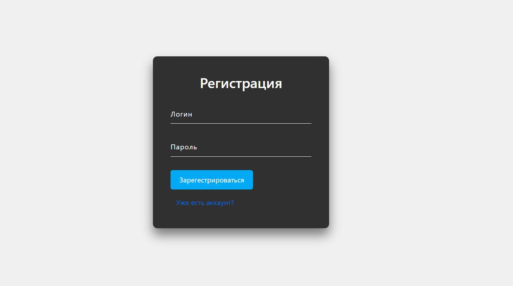

Постановка задачи
Основной задачей учебного проекта стала разработка системы для управления службой вопросов и ответов. В качестве существующего примера такой системы можно привести Ответы mail.ru
Данная система должна позволять пользователям регистрироваться, задавать вопросы и отвечать на них
Выбор стека технлогий
В качестве стека технологий для разработки серверной стороны (Back-end) системы управления форумом были выбраны:
- Web-сервер Apache HTTP Server, являющийся программным обеспечением с открытым исходным кодом;
- Скриптовый язык программирования PHP 7, пользующийся популярностью среди разработчиков Web-приложений в силу простоты, большого количества стандартных возможностей для работы с различными применяемыми в Web-технологиями, а также активного сообщества пользователей;
- Открытая система управления реляционными базами данным MySQL 5;
При разработке клиентской стороны (Front-end) использовался стандартный набор браузерных технологий, среди которых можно выделить следующие:
- Язык разметки гипертекста HTML5, используемый для представления структуры отображаемых Web-страниц;
- Язык разметки стиля CSS3, применяемый для настройки стилевого оформления отображаемых HTML-документов;
- Скриптовый язык программирования JavaScript, применяемый для программирования поведения интерактивных элементов Web-страниц;
Проектирование базы данных
структура MySQL базы данных для проекта выглядит следующим образом:
Рис. 1. Структура базы данных веб-приложения
Структура приложения
В корневом каталоге приложения располагается ряд файлов и директорий, которые необходимы для его корректного функционирования.
Файл index.php является точкой входа пользовательской части приложения и является авторизацией.
Файл start_page.php обрабатывает все входящие от пользователей запросы к различным страницам и действиям службы.
Файлы login.php и logout.php предназначены для авторизации и деавторизации на сайте.
Так же в проекте присутствуют файлы answer.php, ask.php служащие для визуального оформления разных типов веб-страниц (с использованием Bootstrap v3).
Файл connect.php осуществляет подключение к БД.
Обзор функционала приложения
Вёрстка клиентской части приложения выполнялась с учётом возможности запуска на различных типах устройств с разными разрешениями экранов (макет страницы адаптируется под используемое разрешение).
Начальной страницей является форма регистрации. Пользователь может попасть на сайт, только пройдя авторизацию. В верхней части созданного Web-приложения располагается основное меню, в котором находится ссылка на главную страницу (может использоваться для перехода с других страниц, а также блок ссылок на страницу, где можно задать вопрос и выполнить деавторизацию. В левом верхнем углу главной страницы отображается имя пользователя, который вошёл в систему.
Страница авторизации
При попадании на стартовую страницу(регистрации), где можно выбрать пункт “У меня уже есть аккаунт” и попасть на страницу авторизации(входа), пользователь видит форму, в которой надо ввести логин и пароль.(см ниже)
Рис. 2. Страница регистрации
Рис. 3. Страница авторизации
В случае успешной авторизации пользователь попадает на главную страницу Web-приложения.
Главная страница отображает таблицу заданных вопросов, на которые можно ответить(статус которых открыт), и на которые уже были даны верные ответы (статус которых закрыт). Также в навигационном меню можно выйти из аккаунта или перейти на страницу “Задать вопрос”. Также в таблице присутствует пользователь кототорый задал вопрос, дата задаваемого вопроса и рейтинг вопроса, чтобы посмотреть актуальность вопроса для других пользователей.
Рис. 4.Главная страница приложения
Задать вопрос
Страница, на которой отображается форма, в которую можно записать тему и текст своего вопроса и задать его другим пользователям. Обязательно заполнение всех полей.
Рис. 5. Страница, где можно задать вопрос
Просмотр вопроса, ответ на вопрос
Пользователь попадает на страницу вопроса, когда хочет ответить/посмотреть чей –то вопрос и ответы к нему. Вопрос может быть либо закрытым, либо открытым. Если вопрос открыт, то пользователь может написать свой ответ на этот вопрос. Также есть функция - увеличить рейтинг вопроса, чтобы остальные пользователи видели насколько он будет полезен и актуален для остальных пользователей. Если вопрос закрыт, то можно только смотреть ответы, никаких действий больше пользователю не предоставляется по взаимодействию с вопросом. Пользователь, который задал этот вопрос, не может повышать рейтинг и отвечать на вопрос. На странице, где задан его вопрос, он может только закрыть его, что будет значить, что он получил правильный ответ или больше не нуждается в ответе.
Рис. 6. Страница закрытого вопроса, заданного другим пользователем
Рис. 7.Страница открытого вопроса, заданного другим пользователем

Рис. 8. Страница вопроса, заданного этим же пользователем
Заключение
Таким образом, в ходе выполнения учебного проекта была разработана служба вопрос-ответ, позволяющая пользователям задавать интересующие вопросы, получать ответы и отвечать на другие интересующие вопросы.